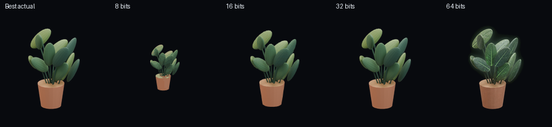
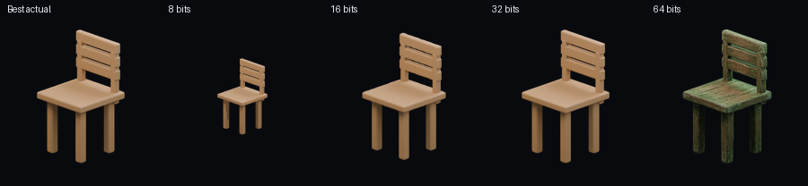
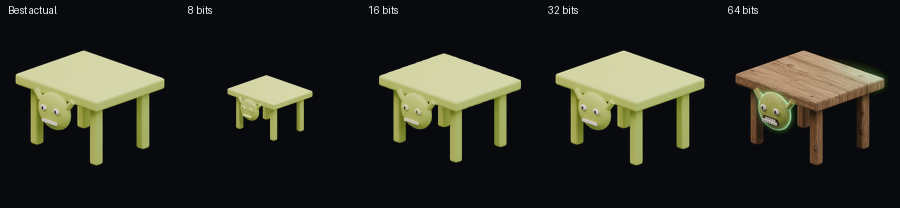
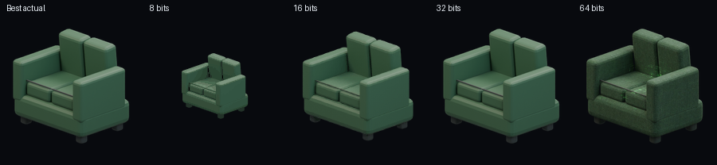
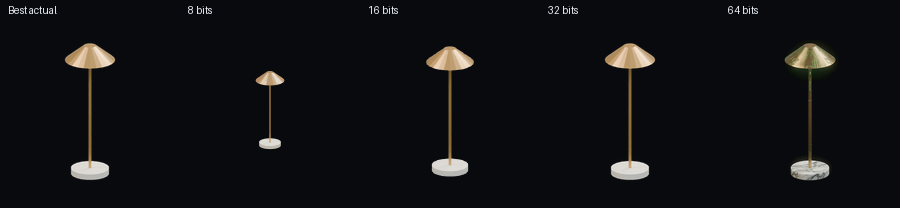
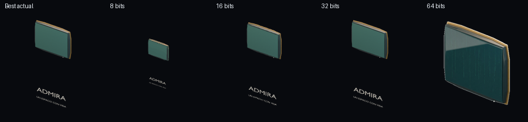

Inventario
A/B · el Best de ahora al lado de cada época
8 y 16 salen del mismo render, reducidos a pixel (96 px y 16 colores; 160 px tramado y 256 colores). 32 es el Best de Blender, 384 px, cuatro giros. 64 es el frente hiperrealista; los otros tres giros de 64 siguen siendo el Best y el rótulo lo dice.





